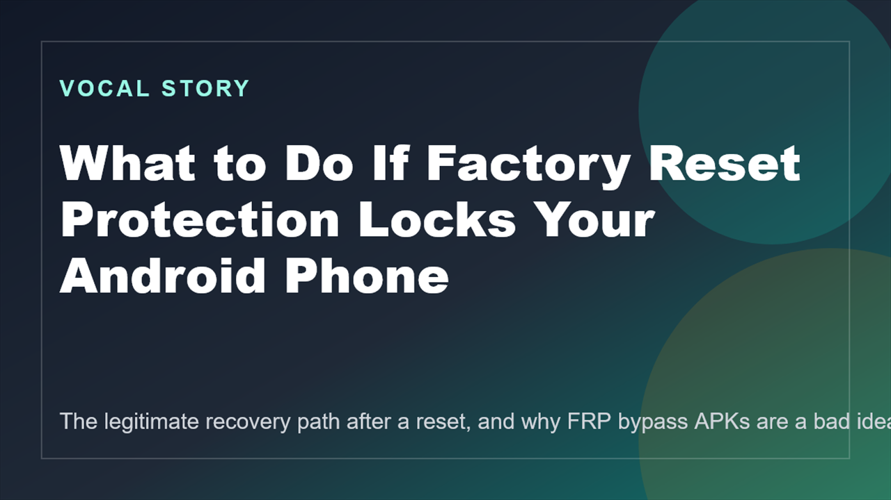

The legitimate path starts with the Google account already tied to the device.
Android safety guide
Factory Reset Protection is frustrating, but the right recovery path is still the safest one.
If an Android reset ends at a Google verification screen, the goal is not to hunt for a bypass APK. The goal is to recover access through the account that was already on the device and prove ownership cleanly.

That usually adds malware, scams, or unsafe permissions on top of the original lock.
Many FRP problems are really Google account recovery problems, not hardware failures.
What matters first
FRP exists to stop a wiped phone from becoming a free phone
Factory Reset Protection can feel harsh when it hits the rightful owner, but its basic purpose is sensible. If a phone with a Google account on it gets wiped, Android may require that same account during setup so a stolen device cannot be reset and reused as if nothing happened.
That is why quick-fix bypass content is a bad foundation. It teaches people to treat a theft-protection feature like a minor inconvenience, and it often routes them through low-trust downloads and unsafe instructions. If the device is genuinely yours, the right solution is slower but cleaner: recover the account, check ownership details, and use official support if the account path stalls.
Before trying anything else
- Confirm the phone is actually yours or was sold to you legitimately.
- Identify the Google account that was on the device before reset.
- Recover that account on another device if needed.
- Pause if the password was changed recently.
The recovery path depends on what kind of phone this actually is
Your personal phone
The focus is the Google account previously synced to the handset and any recovery channels tied to it.
A used phone you bought
The seller may still need to remove the old account properly. If they cannot, the transaction itself may be the issue.
A work or school device
There may be administrator controls or management policies involved, which changes who should unlock it.
Read in order
The four pages that cover the problem without the junk advice
Start with why FRP exists, then move to the recovery checklist, then the used-device and managed-device cases, and finish with the FAQ if you want the shorter answers.
More from our sites
Explore a few more live pages from the same publishing network.
This page sits inside a wider set of live guides, recaps, and utility pages. Use the short list below when you want a few direct jumps without loading a crowded directory page first.
- Full live site directory - Use the full network directory if you want the wider set of tools, recaps, guides, mirrors, and supporting posts.
- Google Block Breaker Guide - Open Google Block Breaker Guide for another live page from the same publishing network.
- Magisk APK Notes - Open Magisk APK Notes for another live page from the same publishing network.
- PaintZ App Guide - Open PaintZ App Guide for another live page from the same publishing network.